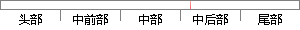

open('POST', region, true)
片段位置图

相似结果|
相似片段 1：send方法。httprequest．Open(‘GET',url，true)；open的第一个参数是HTTP请求的方法，为Get、Post或者Head。open的第二个参数是目标URL。基于安全考虑
相似片段 2：。如果为True，则不会继续执行，直到服务器返回信息。默认为True．按照顺序，open调用完毕之后要调用send方法。send的参数如果是以Post方式发出的话，可以是任何想传给服务器的内容。不过，跟
相似片段 3：(‘GET’，URL，true)：httprequest．send(nul1)：open的第一个参数是HTTP请求的方法，为Get、Post或者Head。open的第二个参数是目标URL。open
相似片段 4：true。按照顺序，open调用完毕之后要调用send方法。Send的参数如果是以POST方式发出的话，可以是任何想传给服务器的内容。4．处理服务器返回的信息这一步是用来描述响应处理函数具体应该做的事情。
相似片段 5：的时间内是否继续执行下面的代码。如果为true，则不会继续执行，直到服务器返回信息。默认为true。按照顺序，open调用完毕之嚣要调用send方法。send的参数如果是以Post方式发出的话，可以是任何想传给服务器的内容。
相似片段 6：,true);//open函数建立连接，采用 POST 方式，true参数表明是异步方式xmlReq.onreadystatechange = handleCallback;//指定回调函数
相似片段 7：，例如xhr.open（‘post’, url, true）；其中第二个参数是向服务请求的资源路径，true表示以非阻塞的方式进行。当open执行完毕后，第三步就是要提交，执行xhr.send(data)，里面的data参数是我们要传入的关键字。
|
※ 片段修改建议 ※
近似词参考：